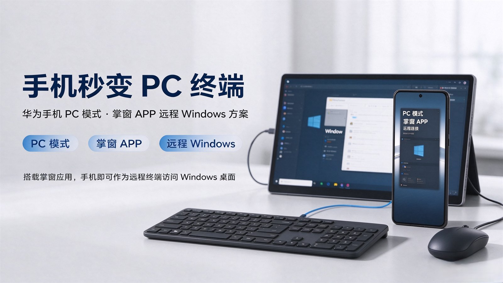
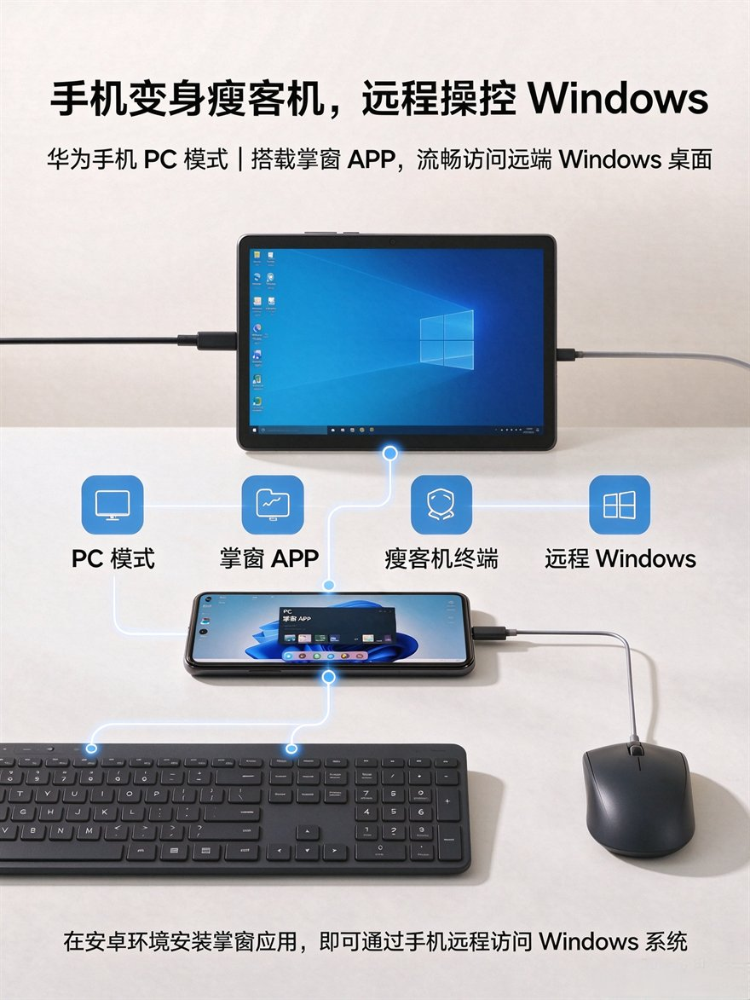
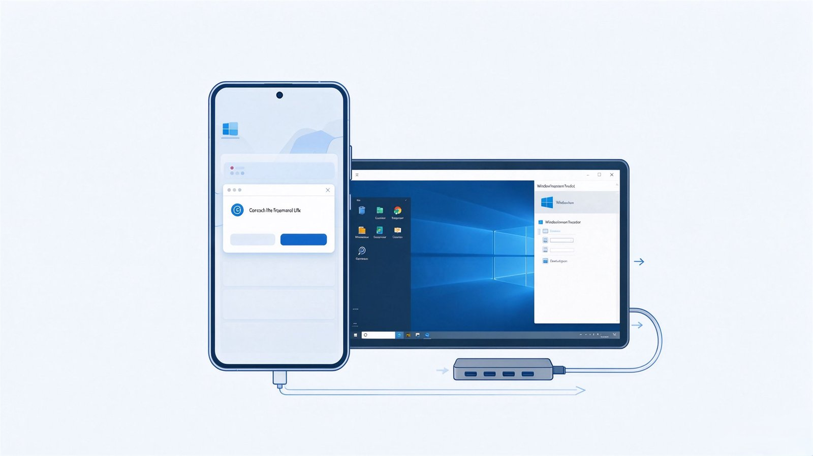
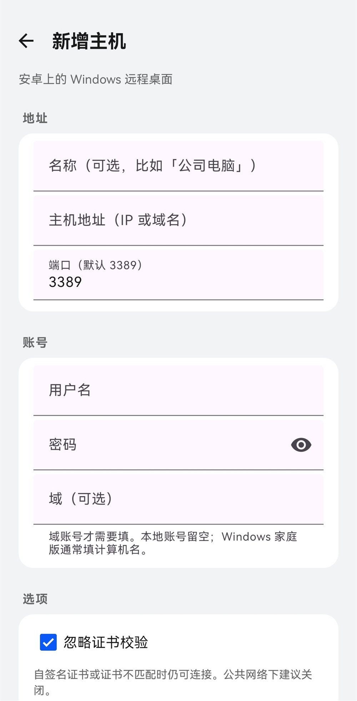
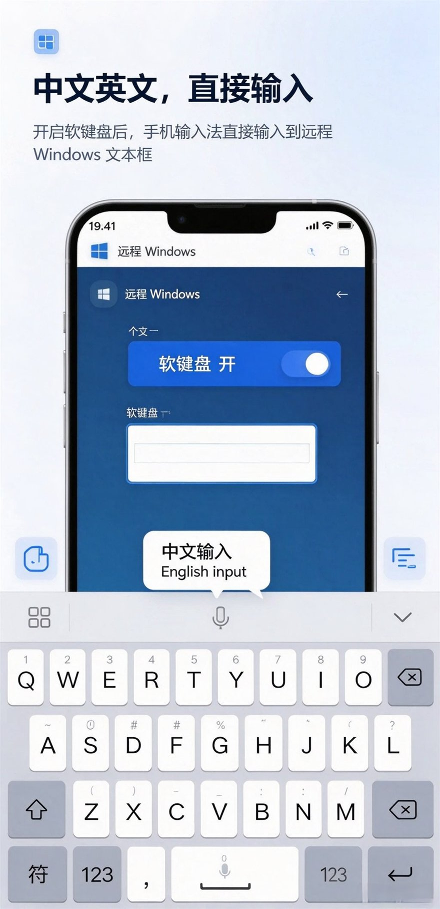
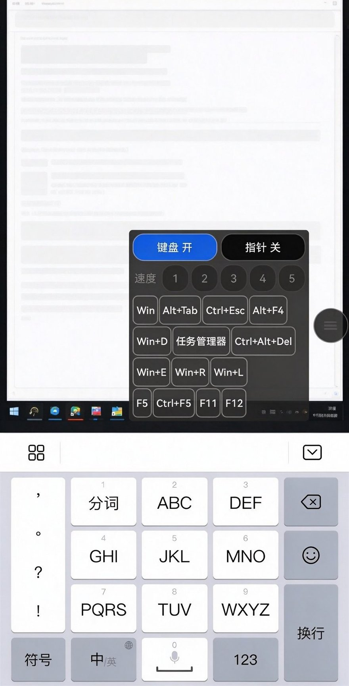
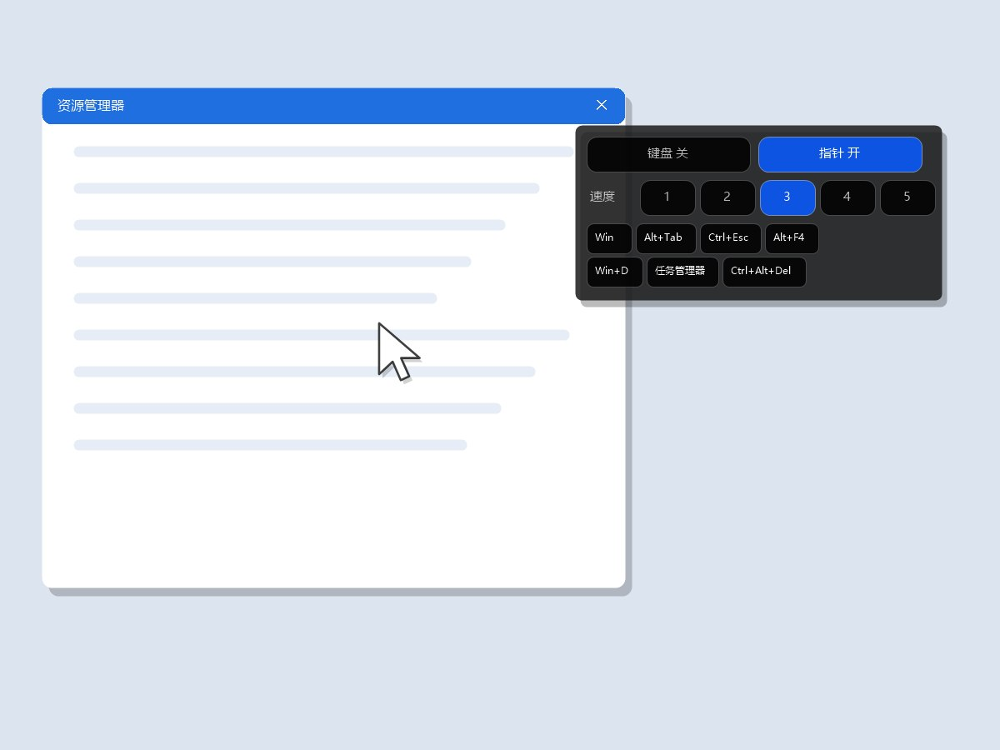

掌窗是一款安卓上的远程桌面（RDP）客户端。它不做文件传输、不做云中转，只把三件事做扎实：画面、键鼠、中文输入。

市面上安卓 RDP 客户端不少，但拿它们连一台真正的 Windows 干活，几乎都会碰到同样四个问题。
| 问题 | 具体表现 |
|---|---|
| 画面延迟 | 拖动窗口、滚动网页时一卡一卡，像在远程看一张不停重新刷新的截图 |
| 画面锯齿 | 字发虚、边缘毛糙，看久了眼睛疼 |
| 打不了中文 | 手机上输入法打出来的汉字，远端一个字都收不到 |
| 点不中 | 远端界面上那些十几像素的小按钮，手指怎么点都点不上 |
掌窗就是针对这四件事重写的：协议栈直接写系统图形缓冲区（不经中间层拷贝）、按 1:1 渲染不缩放、中文走 Unicode 码点直达、缩放按远端分辨率改而不是把画面放大。


手机模式：竖屏拿在手里，单指拖动滚动、双击当左键、长按当右键。
电脑模式：华为手机投到显示器或便携屏，接物理键鼠，用起来和 Windows 笔记本一样。悬停、滚轮、右键菜单全部照常。

密码记住时存的是经过 Android Keystore 加密的密文，密钥不可导出、无法离开这台设备。不勾「记住密码」则完全不保存。


软键盘弹出后直接用手机输入法打字，远端正常收到汉字。物理键盘则走扫描码，让远端自己的输入法去组词——两条路各走各的，都对。
远端 1 像素在手机上可能只有 1 毫米宽。把显示缩放调到 200% 或 250%，相当于把远端的分辨率调低、字和按钮一起变大，而不是把画面糊着放大。

手指在哪里推，光标就从哪里移动。适合远端密密麻麻的小图标。
右侧半圆手柄点一下，滑出面板：软键盘开关、指针模式、指针速度、Windows 组合键（Win、Alt+Tab、Ctrl+Esc、Alt+F4、任务管理器、Ctrl+Alt+Del 等）。Win 和 Alt+Tab 这些键在安卓系统层就被吃掉了，只有做成按钮才送得到远端。
这个产品的边界划得很清楚：
做这个客户端过程中真正踩过的问题，都写在下面了。